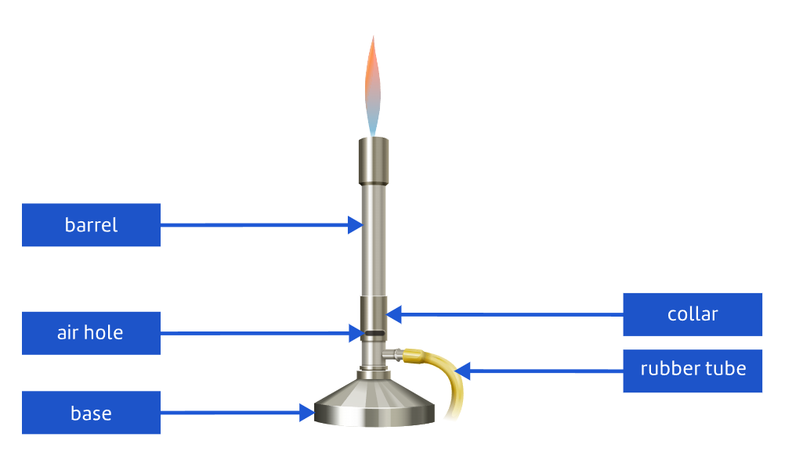
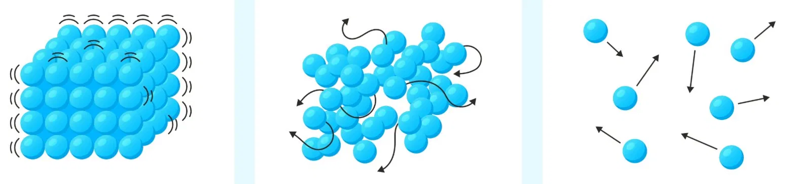
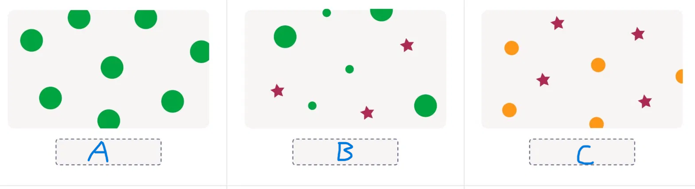
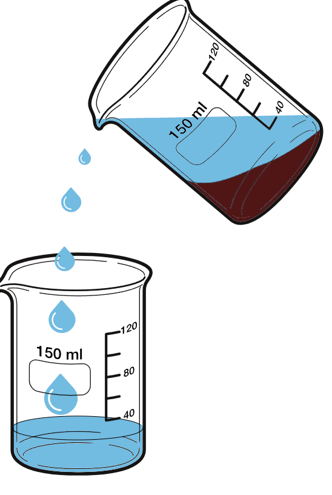

| Section | Topic | MC+T/F | SR (self) | Total |
|---|---|---|---|---|
| LG3 | Particle Theory and States of Matter | — | — | — / 20 |
| LG4 | Pure Substances and Mixtures | — | — | — / 20 |
| LG5 | Separation Techniques | — | — | — / 19 |
| TOTAL | — | — | — / 59 | |
Which state of matter has particles closely packed in a fixed, ordered arrangement?
What happens to the distance between particles when a substance changes from liquid to gas?
Which of the following is a physical property?
What is the correct formula for calculating density?

bunsen burnerWhich labelled part of the Bunsen burner controls the amount of air entering?
Particles in a liquid are completely free to move with no attraction to each other.
A gas has no fixed shape or volume.
Chemical properties describe how a substance interacts with other substances.
When a solid melts, particles gain energy and move further apart.
Density is a chemical property of a substance.
Define density in one sentence.2 marks
What is the difference between a physical and a chemical property? Give one example of each.2 marks

particles statesThe three diagrams below show particles in different states of matter. Identify which diagram represents a gas and explain how you know using particle theory.2 marks
Describe what happens to the particles in a liquid when it is heated to its boiling point.2 marks
A student measures a rock with a mass of 60 g and a volume of 20 cm³. Calculate its density and include the correct unit.2 marks
Which of the following is a pure substance?
In a saltwater solution, what is the solute?
Which term describes a solution that cannot dissolve any more solute at a given temperature?

particles mixturesThe diagrams below show three substances. Which diagram represents a pure substance?
Which method would best separate sand from water?
A mixture can be separated by physical means.
All solutions are mixtures.
Pure water is an example of a mixture.
The solvent is the substance that dissolves into a solution.
A concentrated solution contains a large amount of solute relative to solvent.
Define the term “solute.”2 marks
Give one example of a pure substance and one example of a mixture. Justify each choice.2 marks
What does it mean for a substance to be insoluble? Give an example.2 marks
Using the particle diagrams shown above, label each diagram (A, B, C) as either a pure substance or a mixture, and explain your reasoning for each.2 marks
Explain the difference between a concentrated solution and a dilute solution.2 marks
Which technique would best separate salt from saltwater?
Winnowing separates mixtures based on:
Which property would you rely on when using a magnet to separate a mixture?
Which separation method is used in the home when brewing tea?
Filtration can separate dissolved substances from water.
Sieving separates substances based on particle size.
Distillation can be used to separate a soluble substance from a solution.
Yandying is a separation technique used by First Nations Australians.
The same separation technique can always be used regardless of a mixture's properties.
Name two separation techniques used by First Nations Australians.2 marks
Why is it important to identify the properties of a mixture before choosing a separation technique?2 marks
Describe how you would use filtration to separate sand from water. Include what property makes this possible.2 marks
A student has a mixture of iron filings, sand, and salt dissolved in water. List the steps and techniques they would use to separate all three components.2 marks

separation techniqueIdentify the separation technique shown in the diagram and explain how it works and what type of mixture it is suited to.2 marks
Scroll through to review your answers and self-mark your short response questions. Success criteria you need to focus on will appear in each section’s score box.